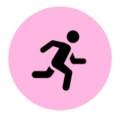
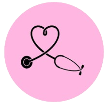

Como se previnir?

Prátique atividade fisíca
A prática regular de atividades físicas é uma das armas mais poderosas na prevenção do câncer de mama, sendo capaz de reduzir o risco da doença em até 25%, segundo a Organização Mundial da Saúde (OMS). O ideal são pelo menos 150 minutos de exercícios de intensidade moderada por semana.
Alimente-se bem
A alimentação saudável desempenha um papel crucial na prevenção do câncer de mama, sendo responsável por regular os hormônios, combater radicais livres e diminuir a inflamação no organismo. Juntamente com a atividade física, as escolhas à mesa formam a base da prevenção que está sob o seu controle.

Fazer exames regularmente
A importância de fazer exames antes de qualquer sintoma aparecer resume-se em duas palavras: salvar vidas. O câncer de mama é uma doença silenciosa em suas fases iniciais, o que significa que quando uma mulher consegue sentir um nódulo ao tocar a mama, o tumor geralmente já está crescendo há meses ou até anos.